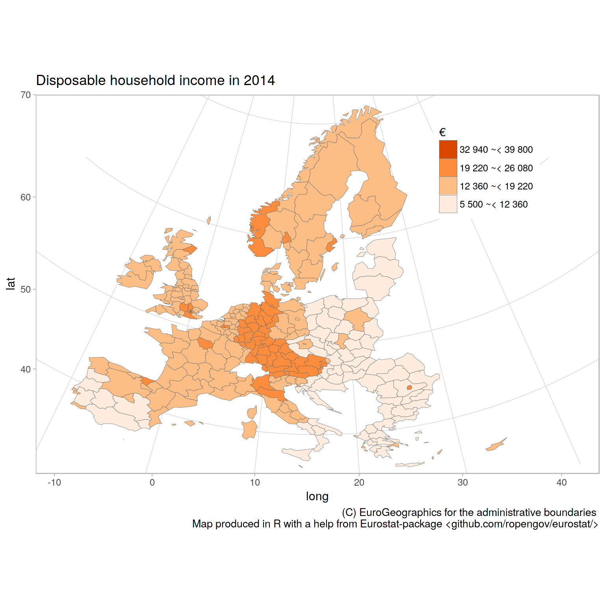

Tutorial (vignette) for the eurostat R package
2019-01-02
eurostat_tutorial.RmdR Tools for Eurostat Open Data
This rOpenGov R package provides tools to access Eurostat database, which you can also browse on-line for the data sets and documentation. For contact information and source code, see the package website.
Installation
Release version (CRAN):
Development version (Github):
Overall, the eurostat package includes the following functions:
clean_eurostat_cache Clean Eurostat Cache
cut_to_classes Cuts the Values Column into Classes and
Polishes the Labels
dic_order Order of Variable Levels from Eurostat
Dictionary.
eu_countries Countries and Country Codes
eurostat-package R Tools for Eurostat open data
eurostat_geodata_60_2016
Geospatial data of Europe from Gisco in 1:60
million scale from year 2016
eurotime2date Date Conversion from Eurostat Time Format
eurotime2num Conversion of Eurostat Time Format to Numeric
get_eurostat Read Eurostat Data
get_eurostat_dic Download Eurostat Dictionary
get_eurostat_geospatial
Download Geospatial Data from GISGO
get_eurostat_json Get Data from Eurostat API in JSON
get_eurostat_raw Download Data from Eurostat Database
get_eurostat_toc Download Table of Contents of Eurostat Data
Sets
harmonize_country_code
Harmonize Country Code
label_eurostat Get Eurostat Codes
search_eurostat Grep Datasets Titles from Eurostat
tgs00026 Auxiliary DataFinding data
Function get_eurostat_toc() downloads a table of contents of eurostat datasets. The values in column ‘code’ should be used to download a selected dataset.
# Load the package
library(eurostat)
library(rvest)
# Get Eurostat data listing
toc <- get_eurostat_toc()
# Check the first items
library(knitr)
kable(head(toc))| title | code | type | last update of data | last table structure change | data start | data end | values |
|---|---|---|---|---|---|---|---|
| Database by themes | data | folder | NA | NA | NA | NA | NA |
| General and regional statistics | general | folder | NA | NA | NA | NA | NA |
| European and national indicators for short-term analysis | euroind | folder | NA | NA | NA | NA | NA |
| Business and consumer surveys (source: DG ECFIN) | ei_bcs | folder | NA | NA | NA | NA | NA |
| Consumer surveys (source: DG ECFIN) | ei_bcs_cs | folder | NA | NA | NA | NA | NA |
| Consumers - monthly data | ei_bsco_m | dataset | 29.11.2018 | 29.11.2018 | 1980M01 | 2018M11 | NA |
With search_eurostat() you can search the table of contents for particular patterns, e.g. all datasets related to passenger transport. The kable function to produces nice markdown output. Note that with the type argument of this function you could restrict the search to for instance datasets or tables.
| title | code | type | last update of data | last table structure change | data start | data end | values |
|---|---|---|---|---|---|---|---|
| Volume of passenger transport relative to GDP | tran_hv_pstra | dataset | 30.07.2018 | 30.07.2018 | 2000 | 2016 | NA |
| Modal split of passenger transport | tran_hv_psmod | dataset | 27.08.2018 | 27.08.2018 | 1990 | 2016 | NA |
| Air passenger transport by reporting country | avia_paoc | dataset | 06.12.2018 | 07.11.2018 | 1993 | 2018Q2 | NA |
| Air passenger transport by main airports in each reporting country | avia_paoa | dataset | 06.12.2018 | 03.10.2018 | 1993 | 2018Q2 | NA |
| Air passenger transport between reporting countries | avia_paocc | dataset | 22.10.2018 | 07.11.2018 | 1993 | 2018Q2 | NA |
| Air passenger transport between main airports in each reporting country and partner reporting countries | avia_paoac | dataset | 22.10.2018 | 03.10.2018 | 1993 | 2018Q2 | NA |
Codes for the dataset can be searched also from the Eurostat database. The Eurostat database gives codes in the Data Navigation Tree after every dataset in parenthesis.
Downloading data
The package supports two of the Eurostats download methods: the bulk download facility and the Web Services’ JSON API. The bulk download facility is the fastest method to download whole datasets. It is also often the only way as the JSON API has limitation of maximum 50 sub-indicators at a time and whole datasets usually exceeds that. To download only a small section of the dataset the JSON API is faster, as it allows to make a data selection before downloading.
A user does not usually have to bother with methods, as both are used via main function get_eurostat(). If only the table id is given, the whole table is downloaded from the bulk download facility. If also filters are defined the JSON API is used.
Here an example of indicator ‘Modal split of passenger transport’. This is the percentage share of each mode of transport in total inland transport, expressed in passenger-kilometres (pkm) based on transport by passenger cars, buses and coaches, and trains. All data should be based on movements on national territory, regardless of the nationality of the vehicle. However, the data collection is not harmonized at the EU level.
Pick and print the id of the data set to download:
# For the original data, see
# http://ec.europa.eu/eurostat/tgm/table.do?tab=table&init=1&plugin=1&language=en&pcode=tsdtr210
id <- search_eurostat("Modal split of passenger transport",
type = "table")$code[1]
print(id)[1] “t2020_rk310”
Get the whole corresponding table. As the table is annual data, it is more convient to use a numeric time variable than use the default date format:
Investigate the structure of the downloaded data set:
## Classes 'tbl_df', 'tbl' and 'data.frame': 2536 obs. of 5 variables:
## $ unit : Factor w/ 1 level "PC": 1 1 1 1 1 1 1 1 1 1 ...
## $ vehicle: Factor w/ 3 levels "BUS_TOT","CAR",..: 1 1 1 1 1 1 1 1 1 1 ...
## $ geo : Factor w/ 35 levels "AT","BE","CH",..: 1 2 3 4 5 6 7 8 9 10 ...
## $ time : num 1990 1990 1990 1990 1990 1990 1990 1990 1990 1990 ...
## $ values : num 11 10.6 3.7 9.1 11.3 32.4 14.9 13.5 6 24.8 ...| unit | vehicle | geo | time | values |
|---|---|---|---|---|
| PC | BUS_TOT | AT | 1990 | 11.0 |
| PC | BUS_TOT | BE | 1990 | 10.6 |
| PC | BUS_TOT | CH | 1990 | 3.7 |
| PC | BUS_TOT | DE | 1990 | 9.1 |
| PC | BUS_TOT | DK | 1990 | 11.3 |
| PC | BUS_TOT | EL | 1990 | 32.4 |
Or you can get only a part of the dataset by defining filters argument. It should be named list, where names corresponds to variable names (lower case) and values are vectors of codes corresponding desidered series (upper case). For time variable, in addition to a time, also a sinceTimePeriod and a lastTimePeriod can be used.
dat2 <- get_eurostat(id, filters = list(geo = c("EU28", "FI"), lastTimePeriod=1), time_format = "num")
kable(dat2)Replacing codes with labels
By default variables are returned as Eurostat codes, but to get human-readable labels instead, use a type = "label" argument.
datl2 <- get_eurostat(id, filters = list(geo = c("EU28", "FI"),
lastTimePeriod = 1),
type = "label", time_format = "num")
kable(head(datl2))Eurostat codes in the downloaded data set can be replaced with human-readable labels from the Eurostat dictionaries with the label_eurostat() function.
| unit | vehicle | geo | time | values |
|---|---|---|---|---|
| Percentage | Motor coaches, buses and trolley buses | Austria | 1990 | 11.0 |
| Percentage | Motor coaches, buses and trolley buses | Belgium | 1990 | 10.6 |
| Percentage | Motor coaches, buses and trolley buses | Switzerland | 1990 | 3.7 |
| Percentage | Motor coaches, buses and trolley buses | Germany (until 1990 former territory of the FRG) | 1990 | 9.1 |
| Percentage | Motor coaches, buses and trolley buses | Denmark | 1990 | 11.3 |
| Percentage | Motor coaches, buses and trolley buses | Greece | 1990 | 32.4 |
The label_eurostat() allows conversion of individual variable vectors or variable names as well.
Vehicle information has 3 levels. You can check them now with:
Selecting and modifying data
EFTA, Eurozone, EU and EU candidate countries
To facilitate smooth visualization of standard European geographic areas, the package provides ready-made lists of the country codes used in the eurostat database for EFTA (efta_countries), Euro area (ea_countries), EU (eu_countries) and EU candidate countries (eu_candidate_countries). These can be used to select specific groups of countries for closer investigation. For conversions with other standard country coding systems, see the countrycode R package. To retrieve the country code list for EFTA, for instance, use:
| code | name |
|---|---|
| IS | Iceland |
| LI | Liechtenstein |
| NO | Norway |
| CH | Switzerland |
EU data from 2012 in all vehicles:
dat_eu12 <- subset(datl, geo == "European Union (current composition)" & time == 2012)
kable(dat_eu12, row.names = FALSE)| unit | vehicle | geo | time | values |
|---|---|---|---|---|
| Percentage | Motor coaches, buses and trolley buses | European Union (current composition) | 2012 | 9.5 |
| Percentage | Passenger cars | European Union (current composition) | 2012 | 82.9 |
| Percentage | Trains | European Union (current composition) | 2012 | 7.7 |
EU data from 2000 - 2012 with vehicle types as variables:
Reshaping the data is best done with spread() in tidyr.
library("tidyr")
dat_eu_0012 <- subset(dat, geo == "EU28" & time %in% 2000:2012)
dat_eu_0012_wide <- spread(dat_eu_0012, vehicle, values)
kable(subset(dat_eu_0012_wide, select = -geo), row.names = FALSE)| unit | time | BUS_TOT | CAR | TRN |
|---|---|---|---|---|
| PC | 2000 | 10.4 | 82.4 | 7.2 |
| PC | 2001 | 10.2 | 82.7 | 7.1 |
| PC | 2002 | 9.9 | 83.3 | 6.8 |
| PC | 2003 | 9.9 | 83.5 | 6.7 |
| PC | 2004 | 9.8 | 83.4 | 6.8 |
| PC | 2005 | 9.8 | 83.3 | 6.9 |
| PC | 2006 | 9.7 | 83.2 | 7.1 |
| PC | 2007 | 9.8 | 83.1 | 7.1 |
| PC | 2008 | 9.9 | 82.8 | 7.4 |
| PC | 2009 | 9.3 | 83.6 | 7.1 |
| PC | 2010 | 9.4 | 83.4 | 7.2 |
| PC | 2011 | 9.4 | 83.2 | 7.4 |
| PC | 2012 | 9.5 | 82.9 | 7.7 |
Train passengers for selected EU countries in 2000 - 2012
dat_trains <- subset(datl, geo %in% c("Austria", "Belgium", "Finland", "Sweden")
& time %in% 2000:2012
& vehicle == "Trains")
dat_trains_wide <- spread(dat_trains, geo, values)
kable(subset(dat_trains_wide, select = -vehicle), row.names = FALSE)| unit | time | Austria | Belgium | Finland | Sweden |
|---|---|---|---|---|---|
| Percentage | 2000 | 9.7 | 6.3 | 5.1 | 6.8 |
| Percentage | 2001 | 9.7 | 6.4 | 4.8 | 7.1 |
| Percentage | 2002 | 9.7 | 6.5 | 4.8 | 7.1 |
| Percentage | 2003 | 9.5 | 6.5 | 4.7 | 7.0 |
| Percentage | 2004 | 9.4 | 7.1 | 4.7 | 6.8 |
| Percentage | 2005 | 9.8 | 6.6 | 4.8 | 7.1 |
| Percentage | 2006 | 10.0 | 6.9 | 4.8 | 7.6 |
| Percentage | 2007 | 10.0 | 7.1 | 5.0 | 7.9 |
| Percentage | 2008 | 11.1 | 7.5 | 5.4 | 8.6 |
| Percentage | 2009 | 11.1 | 7.5 | 5.1 | 8.7 |
| Percentage | 2010 | 11.0 | 7.7 | 5.2 | 8.7 |
| Percentage | 2011 | 11.3 | 7.7 | 5.0 | 8.7 |
| Percentage | 2012 | 11.8 | 7.8 | 5.3 | 9.1 |
Visualization
Visualizing train passenger data with ggplot2:
library(ggplot2)
p <- ggplot(dat_trains, aes(x = time, y = values, colour = geo))
p <- p + geom_line()
print(p)
Triangle plot is handy for visualizing data sets with three variables.
library(tidyr)
library(plotrix)
library(eurostat)
library(dplyr)
library(tidyr)
# All sources of renewable energy are to be grouped into three sets
dict <- c("Solid biofuels (excluding charcoal)" = "Biofuels",
"Biogasoline" = "Biofuels",
"Other liquid biofuels" = "Biofuels",
"Biodiesels" = "Biofuels",
"Biogas" = "Biofuels",
"Hydro power" = "Hydro power",
"Tide, Wave and Ocean" = "Hydro power",
"Solar thermal" = "Wind, solar, waste and Other",
"Geothermal Energy" = "Wind, solar, waste and Other",
"Solar photovoltaic" = "Wind, solar, waste and Other",
"Municipal waste (renewable)" = "Wind, solar, waste and Other",
"Wind power" = "Wind, solar, waste and Other",
"Bio jet kerosene" = "Wind, solar, waste and Other")
# Some cleaning of the data is required
energy3 <- get_eurostat("ten00081") %>%
label_eurostat(dat) %>%
filter(time == "2013-01-01",
product != "Renewable energies") %>%
mutate(nproduct = dict[as.character(product)], # just three categories
geo = gsub(geo, pattern=" \\(.*", replacement="")) %>%
select(nproduct, geo, values) %>%
group_by(nproduct, geo) %>%
summarise(svalue = sum(values)) %>%
group_by(geo) %>%
mutate(tvalue = sum(svalue),
svalue = svalue/sum(svalue)) %>%
filter(tvalue > 1000) %>% # only large countries
spread(nproduct, svalue)
# Triangle plot
par(cex=0.75, mar=c(0,0,0,0))
positions <- plotrix::triax.plot(as.matrix(energy3[, c(3,5,4)]),
show.grid = TRUE,
label.points= FALSE, point.labels = energy3$geo,
col.axis="gray50", col.grid="gray90",
pch = 19, cex.axis=0.8, cex.ticks=0.7, col="grey50")
# Larger labels
ind <- which(energy3$geo %in% c("Norway", "Iceland","Denmark","Estonia", "Turkey", "Italy", "Finland"))
df <- data.frame(positions$xypos, geo = energy3$geo)
points(df$x[ind], df$y[ind], cex=2, col="red", pch=19)
text(df$x[ind], df$y[ind], df$geo[ind], adj = c(0.5,-1), cex=1.5)
Maps
Disposable income of private households by NUTS 2 regions at 1:60mln resolution using tmap
The mapping examples below use tmap package.
## Linking to GEOS 3.6.2, GDAL 2.3.2, PROJ 5.1.0library(tmap)
# Download attribute data from Eurostat
sp_data <- eurostat::get_eurostat("tgs00026",
time_format = "raw",
stringsAsFactors = FALSE) %>%
# subset to have only a single row per geo
dplyr::filter(time == 2010, nchar(geo) == 4) %>%
# categorise
dplyr::mutate(income = cut_to_classes(values, n = 5))## Table tgs00026 cached at /tmp/RtmpThRApu/eurostat/tgs00026_raw_code_FF.rds# Download geospatial data from GISCO
geodata <- get_eurostat_geospatial(output_class = "sf",
resolution = "60",
nuts_level = 2,
year = 2013)##
## COPYRIGHT NOTICE
##
## When data downloaded from this page
## <http://ec.europa.eu/eurostat/web/gisco/geodata/reference-data/administrative-units-statistical-units>
## is used in any printed or electronic publication,
## in addition to any other provisions
## applicable to the whole Eurostat website,
## data source will have to be acknowledged
## in the legend of the map and
## in the introductory page of the publication
## with the following copyright notice:
##
## - EN: (C) EuroGeographics for the administrative boundaries
## - FR: (C) EuroGeographics pour les limites administratives
## - DE: (C) EuroGeographics bezuglich der Verwaltungsgrenzen
##
## For publications in languages other than
## English, French or German,
## the translation of the copyright notice
## in the language of the publication shall be used.
##
## If you intend to use the data commercially,
## please contact EuroGeographics for
## information regarding their licence agreements.
## ## No encoding supplied: defaulting to UTF-8.##
## # --------------------------
## HEADS UP!!
##
## Function now returns the data in 'sf'-class (simple features)
## by default which is different
## from previous behaviour's 'SpatialPolygonDataFrame'.
##
## If you prefer either 'SpatialPolygonDataFrame' or
## fortified 'data_frame' (for ggplot2::geom_polygon),
## please specify it explicitly to 'output_class'-argument!
##
## # --------------------------
## ## Joining, by = "geo"Construct the map
map1 <- tmap::tm_shape(geodata) +
tmap::tm_fill("lightgrey") +
tmap::tm_shape(map_data) +
tmap::tm_grid() +
tmap::tm_polygons("income", title = "Disposable household\nincomes in 2010",
palette = "Oranges")
print(map1) 
Interactive maps can be generated as well
Disposable income of private households by NUTS 2 regions in Poland with labels at 1:1mln resolution using tmap
library(eurostat)
library(dplyr)
library(sf)
library(RColorBrewer)
# Downloading and manipulating the tabular data
print("Let us focus on year 2014 and NUTS-3 level")## [1] "Let us focus on year 2014 and NUTS-3 level"euro_sf2 <- get_eurostat("tgs00026", time_format = "raw",
stringsAsFactors = FALSE,
filter = list(time = "2014")) %>%
# Subset to NUTS-3 level
dplyr::filter(grepl("PL",geo)) %>%
# label the single geo column
mutate(label = paste0(label_eurostat(.)[["geo"]], "\n", values, "€"),
income = cut_to_classes(values))
print("Download geospatial data from GISCO")## [1] "Download geospatial data from GISCO"geodata <- get_eurostat_geospatial(output_class = "sf", resolution = "60", nuts_level = 2, year = 2013)##
## COPYRIGHT NOTICE
##
## When data downloaded from this page
## <http://ec.europa.eu/eurostat/web/gisco/geodata/reference-data/administrative-units-statistical-units>
## is used in any printed or electronic publication,
## in addition to any other provisions
## applicable to the whole Eurostat website,
## data source will have to be acknowledged
## in the legend of the map and
## in the introductory page of the publication
## with the following copyright notice:
##
## - EN: (C) EuroGeographics for the administrative boundaries
## - FR: (C) EuroGeographics pour les limites administratives
## - DE: (C) EuroGeographics bezuglich der Verwaltungsgrenzen
##
## For publications in languages other than
## English, French or German,
## the translation of the copyright notice
## in the language of the publication shall be used.
##
## If you intend to use the data commercially,
## please contact EuroGeographics for
## information regarding their licence agreements.
## ## No encoding supplied: defaulting to UTF-8.##
## # --------------------------
## HEADS UP!!
##
## Function now returns the data in 'sf'-class (simple features)
## by default which is different
## from previous behaviour's 'SpatialPolygonDataFrame'.
##
## If you prefer either 'SpatialPolygonDataFrame' or
## fortified 'data_frame' (for ggplot2::geom_polygon),
## please specify it explicitly to 'output_class'-argument!
##
## # --------------------------
## ## Joining, by = "geo"# plot map
map2 <- tm_shape(geodata) +
tm_fill("lightgrey") +
tm_shape(map_data, is.master = TRUE) +
tm_polygons("income", title = "Disposable household incomes in 2014",
palette = "Oranges", border.col = "white") +
tm_text("NUTS_NAME", just = "center") +
tm_scale_bar()
map2
Disposable income of private households by NUTS 2 regions at 1:10mln resolution using spplot
library(sp)
library(eurostat)
library(dplyr)
library(RColorBrewer)
dat <- get_eurostat("tgs00026", time_format = "raw", stringsAsFactors = FALSE) %>%
# subsetting to year 2014 and NUTS-2 level
dplyr::filter(time == 2014, nchar(geo) == 4) %>%
# classifying the values the variable
dplyr::mutate(cat = cut_to_classes(values))## Reading cache file /tmp/RtmpThRApu/eurostat/tgs00026_raw_code_FF.rds## Table tgs00026 read from cache file: /tmp/RtmpThRApu/eurostat/tgs00026_raw_code_FF.rds# Download geospatial data from GISCO
geodata <- get_eurostat_geospatial(output_class = "spdf", resolution = "10", nuts_level = 2, year = 2013)##
## COPYRIGHT NOTICE
##
## When data downloaded from this page
## <http://ec.europa.eu/eurostat/web/gisco/geodata/reference-data/administrative-units-statistical-units>
## is used in any printed or electronic publication,
## in addition to any other provisions
## applicable to the whole Eurostat website,
## data source will have to be acknowledged
## in the legend of the map and
## in the introductory page of the publication
## with the following copyright notice:
##
## - EN: (C) EuroGeographics for the administrative boundaries
## - FR: (C) EuroGeographics pour les limites administratives
## - DE: (C) EuroGeographics bezuglich der Verwaltungsgrenzen
##
## For publications in languages other than
## English, French or German,
## the translation of the copyright notice
## in the language of the publication shall be used.
##
## If you intend to use the data commercially,
## please contact EuroGeographics for
## information regarding their licence agreements.
## ## No encoding supplied: defaulting to UTF-8.## SpatialPolygonDataFrame at resolution 1: 10 cached at: /tmp/RtmpThRApu/eurostat/spdf1022013.RData##
## # --------------------------
## HEADS UP!!
##
## Function now returns the data in 'sf'-class (simple features)
## by default which is different
## from previous behaviour's 'SpatialPolygonDataFrame'.
##
## If you prefer either 'SpatialPolygonDataFrame' or
## fortified 'data_frame' (for ggplot2::geom_polygon),
## please specify it explicitly to 'output_class'-argument!
##
## # --------------------------
## ## Joining, by = "geo"# plot map
sp::spplot(obj = geodata, "cat", main = "Disposable household income",
xlim = c(-22,34), ylim = c(35,70),
col.regions = c("dim grey", brewer.pal(n = 5, name = "Oranges")),
col = "white", usePolypath = FALSE)
Disposable income of private households by NUTS 2 regions at 1:60mln resolution using ggplot2
Meanwhile the CRAN version of ggplot2 is lacking support for simple features, you can plot maps with ggplot2 by downloading geospatial data as data.frame with output_class argument set as df.
library(eurostat)
library(dplyr)
library(ggplot2)
dat <- get_eurostat("tgs00026", time_format = "raw", stringsAsFactors = FALSE) %>%
# subsetting to year 2014 and NUTS-2 level
dplyr::filter(time == 2014, nchar(geo) == 4) %>%
# classifying the values the variable
dplyr::mutate(cat = cut_to_classes(values))## Reading cache file /tmp/RtmpThRApu/eurostat/tgs00026_raw_code_FF.rds## Table tgs00026 read from cache file: /tmp/RtmpThRApu/eurostat/tgs00026_raw_code_FF.rds# Download geospatial data from GISCO
geodata <- get_eurostat_geospatial(resolution = "60", nuts_level = "2", year = 2013)##
## COPYRIGHT NOTICE
##
## When data downloaded from this page
## <http://ec.europa.eu/eurostat/web/gisco/geodata/reference-data/administrative-units-statistical-units>
## is used in any printed or electronic publication,
## in addition to any other provisions
## applicable to the whole Eurostat website,
## data source will have to be acknowledged
## in the legend of the map and
## in the introductory page of the publication
## with the following copyright notice:
##
## - EN: (C) EuroGeographics for the administrative boundaries
## - FR: (C) EuroGeographics pour les limites administratives
## - DE: (C) EuroGeographics bezuglich der Verwaltungsgrenzen
##
## For publications in languages other than
## English, French or German,
## the translation of the copyright notice
## in the language of the publication shall be used.
##
## If you intend to use the data commercially,
## please contact EuroGeographics for
## information regarding their licence agreements.
## ## No encoding supplied: defaulting to UTF-8.##
## # --------------------------
## HEADS UP!!
##
## Function now returns the data in 'sf'-class (simple features)
## by default which is different
## from previous behaviour's 'SpatialPolygonDataFrame'.
##
## If you prefer either 'SpatialPolygonDataFrame' or
## fortified 'data_frame' (for ggplot2::geom_polygon),
## please specify it explicitly to 'output_class'-argument!
##
## # --------------------------
## ## Joining, by = "geo"ggplot(data=map_data) + geom_sf(aes(fill=cat),color="dim grey", size=.1) +
scale_fill_brewer(palette = "Oranges") +
guides(fill = guide_legend(reverse=T, title = "euro")) +
labs(title="Disposable household income in 2014",
caption="(C) EuroGeographics for the administrative boundaries
Map produced in R with a help from Eurostat-package <github.com/ropengov/eurostat/>") +
theme_light() + theme(legend.position=c(.8,.8)) +
coord_sf(xlim=c(-12,44), ylim=c(35,70))
SDMX
Eurostat data is available also in the SDMX format. The eurostat R package does not provide custom tools for this but the generic rsdmx and rjsdmx R packages can be used to access data in that format when necessary:
library(rsdmx)
# Data set URL
url <- "http://ec.europa.eu/eurostat/SDMX/diss-web/rest/data/cdh_e_fos/..PC.FOS1.BE/?startperiod=2005&endPeriod=2011"
# Read the data from eurostat
d <- readSDMX(url)
# Convert to data frame and show the first entries
df <- as.data.frame(d)
kable(head(df))| UNIT | Y_GRAD | FOS07 | GEO | FREQ | obsTime | obsValue | OBS_STATUS |
|---|---|---|---|---|---|---|---|
| PC | TOTAL | FOS1 | BE | A | 2009 | NA | na |
| PC | TOTAL | FOS1 | BE | A | 2006 | NA | na |
| PC | Y_GE1990 | FOS1 | BE | A | 2009 | 43.75 | NA |
| PC | Y_GE1990 | FOS1 | BE | A | 2006 | NA | na |
Further examples
For further examples, see the package homepage.
Version info
This tutorial was created with
## R version 3.5.1 (2018-07-02)
## Platform: x86_64-pc-linux-gnu (64-bit)
## Running under: Ubuntu 18.10
##
## Matrix products: default
## BLAS: /usr/lib/x86_64-linux-gnu/openblas/libblas.so.3
## LAPACK: /usr/lib/x86_64-linux-gnu/libopenblasp-r0.3.3.so
##
## locale:
## [1] LC_CTYPE=en_US.UTF-8 LC_NUMERIC=C
## [3] LC_TIME=en_US.UTF-8 LC_COLLATE=en_US.UTF-8
## [5] LC_MONETARY=en_US.UTF-8 LC_MESSAGES=en_US.UTF-8
## [7] LC_PAPER=en_US.UTF-8 LC_NAME=C
## [9] LC_ADDRESS=C LC_TELEPHONE=C
## [11] LC_MEASUREMENT=en_US.UTF-8 LC_IDENTIFICATION=C
##
## attached base packages:
## [1] stats graphics grDevices utils datasets methods base
##
## other attached packages:
## [1] rsdmx_0.5-13 sp_1.3-1 RColorBrewer_1.1-2
## [4] tmap_2.1-1 sf_0.7-2 dplyr_0.7.8
## [7] plotrix_3.7-4 ggplot2_3.1.0 tidyr_0.8.2
## [10] bindrcpp_0.2.2 rvest_0.3.2 xml2_1.2.0
## [13] eurostat_3.3.31 knitr_1.20
##
## loaded via a namespace (and not attached):
## [1] httr_1.4.0 viridisLite_0.3.0 jsonlite_1.6
## [4] shiny_1.2.0 assertthat_0.2.0 stats4_3.5.1
## [7] highr_0.7 yaml_2.2.0 pillar_1.3.1
## [10] backports_1.1.3 lattice_0.20-35 glue_1.3.0
## [13] digest_0.6.18 promises_1.0.1 colorspace_1.3-2
## [16] htmltools_0.3.6 httpuv_1.4.5 plyr_1.8.4
## [19] XML_3.98-1.16 pkgconfig_2.0.2 broom_0.5.1
## [22] raster_2.8-4 purrr_0.2.5 xtable_1.8-3
## [25] webshot_0.5.1 scales_1.0.0 satellite_1.0.1
## [28] later_0.7.5 tibble_1.4.2 generics_0.0.2
## [31] withr_2.1.2 lazyeval_0.2.1 mapview_2.6.0
## [34] magrittr_1.5 crayon_1.3.4 mime_0.6
## [37] memoise_1.1.0 evaluate_0.12 fs_1.2.6
## [40] nlme_3.1-137 MASS_7.3-51.1 lwgeom_0.1-4
## [43] class_7.3-14 Cairo_1.5-9 tools_3.5.1
## [46] hms_0.4.2 stringr_1.3.1 munsell_0.5.0
## [49] compiler_3.5.1 pkgdown_1.1.0.9000 e1071_1.7-0
## [52] rlang_0.3.0.1 RCurl_1.95-4.11 classInt_0.3-1
## [55] units_0.6-2 grid_3.5.1 tmaptools_2.0-1
## [58] dichromat_2.0-0 htmlwidgets_1.3 crosstalk_1.0.0
## [61] bitops_1.0-6 base64enc_0.1-3 labeling_0.3
## [64] rmarkdown_1.10 gtable_0.2.0 codetools_0.2-15
## [67] curl_3.2 DBI_1.0.0 roxygen2_6.1.0
## [70] R6_2.3.0 lubridate_1.7.4 rgdal_1.3-6
## [73] rgeos_0.3-28 bindr_0.1.1 commonmark_1.6
## [76] rprojroot_1.3-2 KernSmooth_2.23-15 readr_1.3.1
## [79] desc_1.2.0 stringi_1.2.4 Rcpp_1.0.0
## [82] png_0.1-7 leaflet_2.0.2 tidyselect_0.2.5